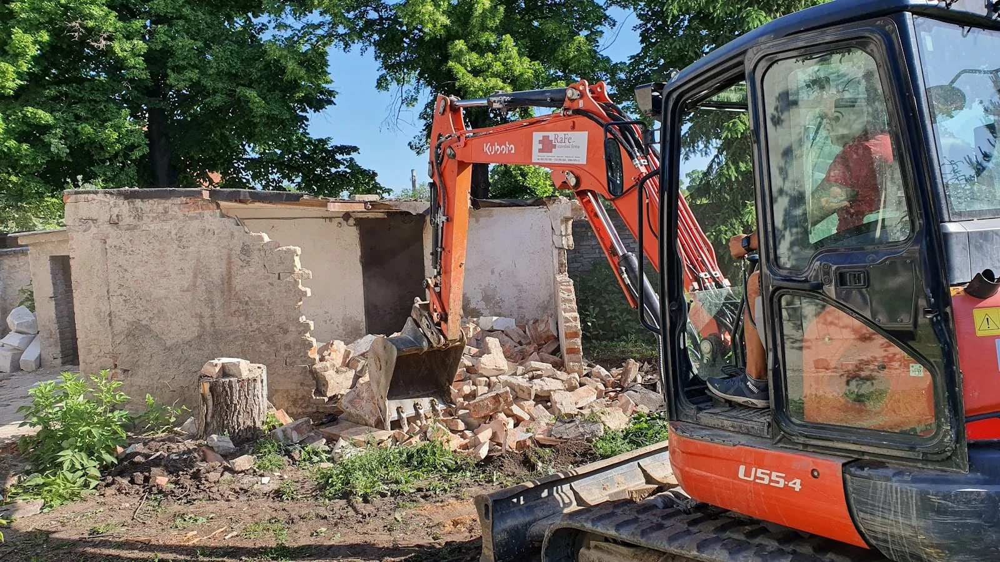
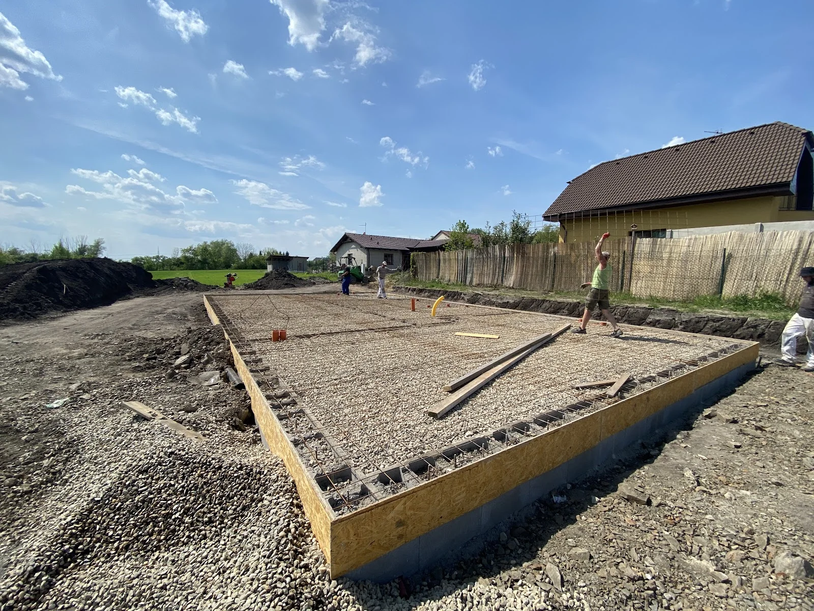

Zemní a výkopové práce
Výkopy základů, rýh, bazénů, jímek, retenčních nádrží a dalších stavebních objektů.

Výkopy, základy, přípojky, terénní úpravy i demolice. Přijedeme s technikou, uděláme práci a necháme po sobě výsledek, na kterém můžete stavět.
Pomáháme připravit pozemky, základy i celé stavby tak, aby další práce mohly navázat bez zbytečných komplikací.
Zakládáme si na přesné práci, rozumném postupu a normální domluvě. Pro zemní práce používáme bagry Kubota.
Od prvního výkopu až po přípravu pro další řemesla. Rozsah zakázky přizpůsobíme tomu, co skutečně potřebujete.
Výkopy základů, rýh, bazénů, jímek, retenčních nádrží a dalších stavebních objektů.
Výkopy pro vodu, kanalizaci, elektřinu a ostatní inženýrské sítě.
Základové pasy, srovnání stavební plochy, podsypy a příprava podkladních vrstev.
Srovnání pozemků, přesun zeminy, modelace terénu a finální úpravy.
Menší demolice, bourací práce a příprava prostoru pro novou výstavbu.
Navazující stavební práce podle rozsahu zakázky.
Pro zemní práce používáme bagry Kubota. Nasazení techniky domluvíme podle rozsahu výkopu, přístupu na pozemek a požadovaného výsledku.
Pošlete fotky, rozměry nebo se domluvíme na obhlídce.
Zvolíme techniku, rozsah práce a domluvíme termín.
Přijedeme připraveni a práci dotáhneme podle dohody.
Výsledek připravíme tak, aby mohl navázat další krok stavby.
Příprava základů i demolice s technikou Kubota. Podívejte se na fotografie z našich realizací.

Bednění, výztuž a příprava podkladu pro základovou desku.
Bourání zděného objektu s využitím pásového bagru.
Stačí krátký popis, lokalita a ideálně pár fotek. Na jejich základě domluvíme další postup.
Toto je pracovní náhled webu. Telefon a e-mail budou zveřejněny po potvrzení správných údajů. Poptávky zatím nelze odesílat.